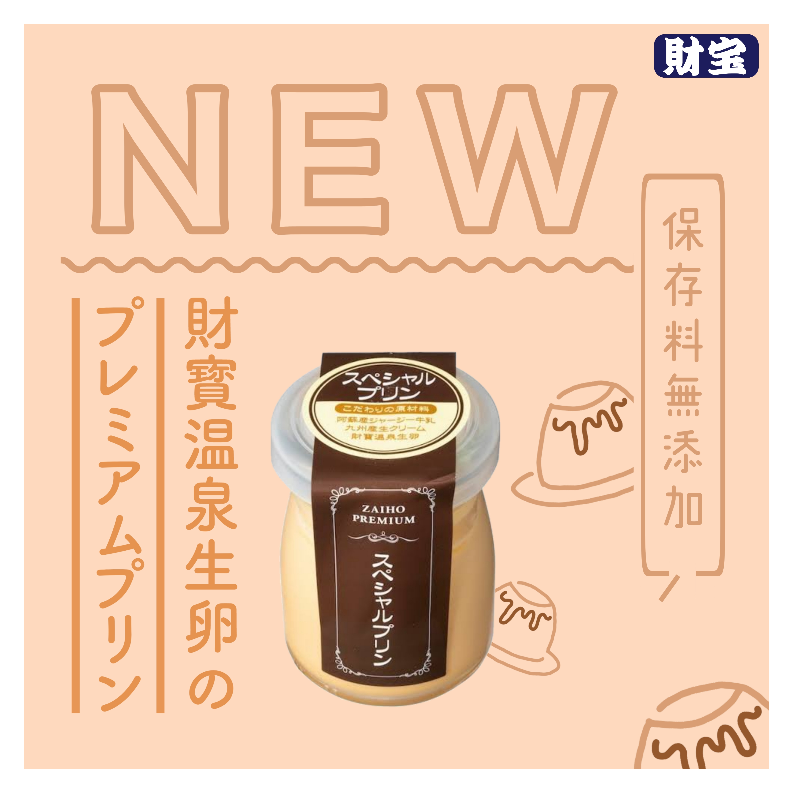
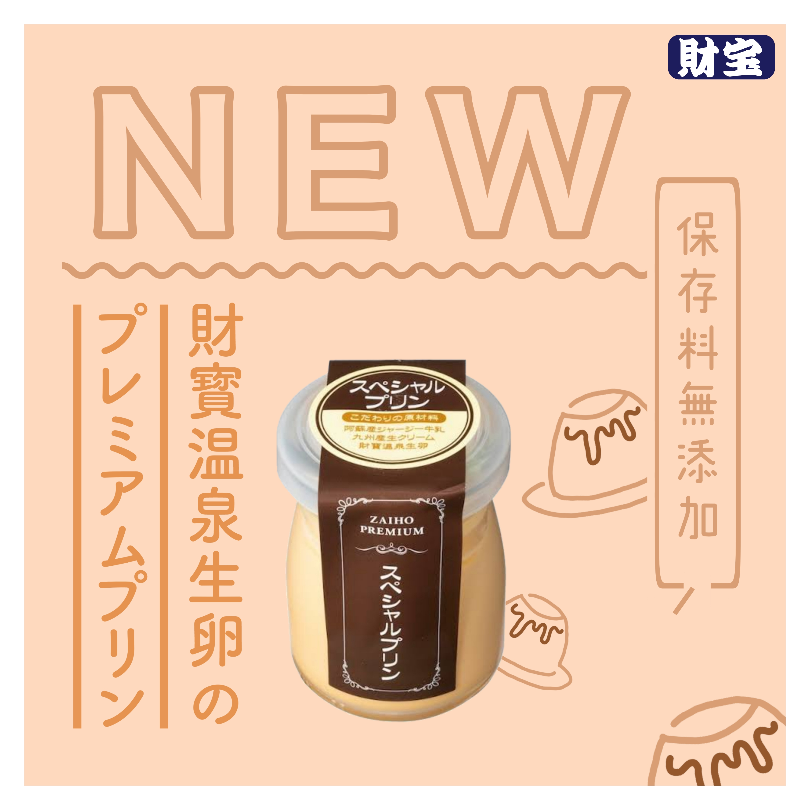

By.Kanade Hokaguchi | banner.design
株式会社財宝様からの商品を使用し、計9種類のオリジナルバナーを制作させていただきました。
それぞれ商品の特徴や雰囲気、美味しさ。を画像一枚で表現することにとても苦労しました。
ですが、制作してる最中はとても楽しく、1枚につき約20分程の作業時間で完成しています。
頼りになる人材になるために、デザインのスキル向上を目指します。
 
